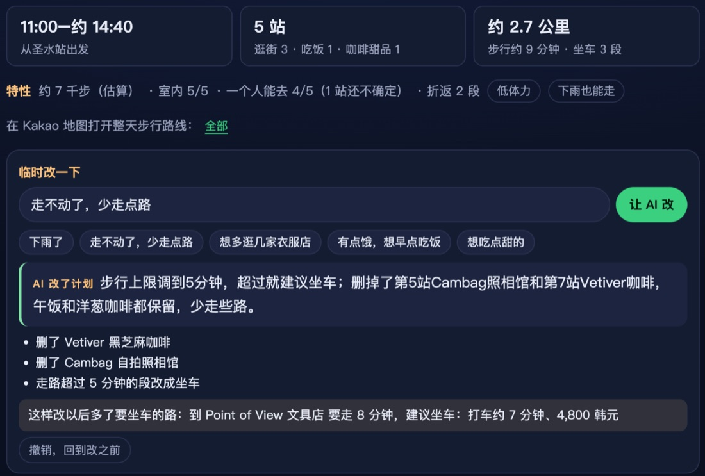
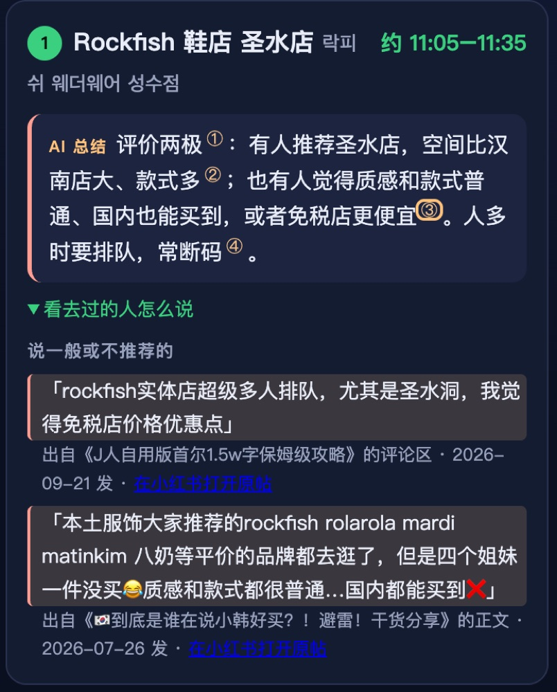
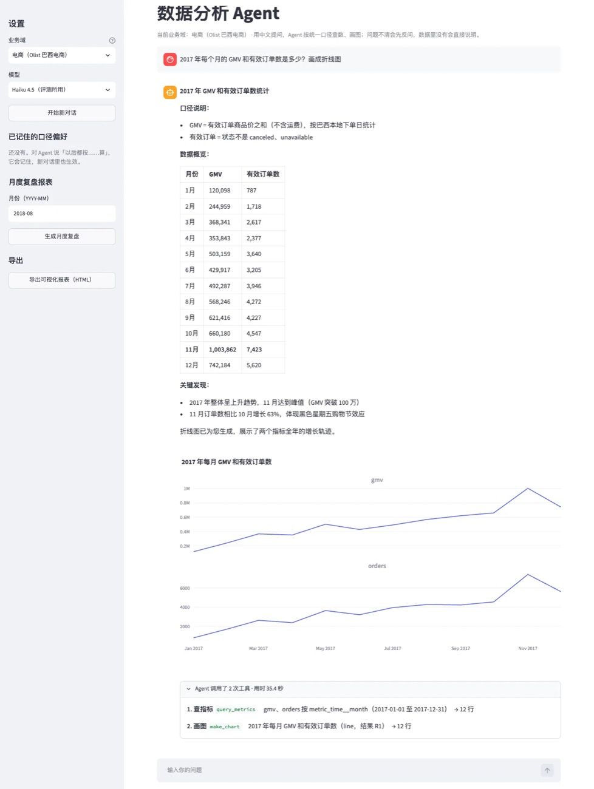
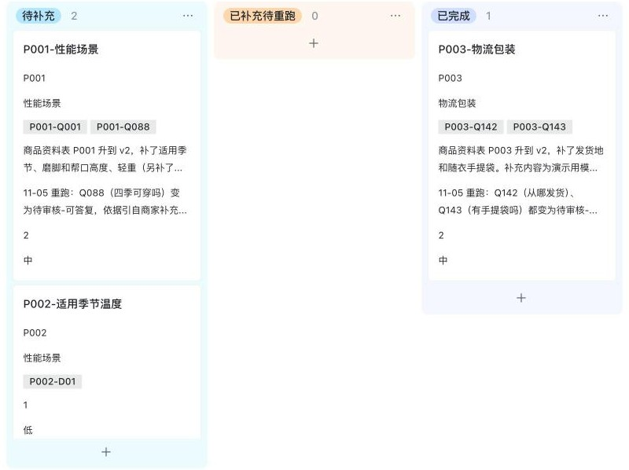

Seoul Deck
把首尔攻略变成能走的一天。
我从 226 篇攻略和 5,817 条评论整理出 907 张店卡。试着点开地图上的一家店，看看同一个地方，去过的人怎么说。
换个出发状态
点地图上的站号，查看店卡。再点「路线」，把状态改为「落地当天」。
我为什么这样排路线
从攻略原文到一天的行程
评测记录与尚未验证的问题 ＋
需求来自 226 篇帖子下的 1,076 条提问。模型负责提炼口碑、理解用户的话、给出改行程方案，且只能基于店卡库和附近候选店作答；营业时间、步行距离由代码校验后才采用，引用的原话逐字核对。


评测结果
| 测什么 | 结果 | 怎么测的 |
|---|---|---|
| 模型抽的判断和人工是否一致 | 7 个字段 76%–96%，原话逐字 100% | 70 句，先标注，标完再看模型答案 |
| 有评价的段落有没有收进店卡 | 33/37（89%） | 5 家店，检索词比系统宽 |
| 一句话改计划 | 听懂 20/20，越界拒答 4/4，违规 0 | 27 句真实调用，判据事先写好 |
| 导入攻略 | 自动加 97 家，错加 0，召回 92% | 20 篇没参与调试的帖子 |
| 改完计划，页面前后是否一致 | 6 街区 114 种组合全过 | 代码检查渲染出来的页面 |
| AI 总结能否找到原话 | 495 小句里 459 句（93%） | 模型切句标编号，代码核对原文 |
还没验证的
没有真实用户，采用意愿和省下的时间都没有数据。路线没有实地走过，步行按直线距离乘系数估算。营业时间和人均是 10 月下旬读的，出发前要再核。
经营数据 Agent
为什么同一批订单，会有两个复购率？
我用公开的 Olist 订单搭建指标层，把查询、口径校验和计算拆开。你可以换一个统计口径，看回答怎样变化。
78→92% 开发集上，分五轮排查错答
按查询结果、回答、行为分项判分。规则对着开发集调，分数偏乐观
11/12 冻结验收集
跑之前锁定题目。另设只写 SQL 的对照，它在验收中有时不比主方案差
0 行 换业务域的引擎改动
业务口径抽成 186 行配置，第二业务域 12 道迁移题全过
评测记录与尚未验证的问题 ＋
底层用公开的 Olist 订单搭数仓，统一 25 项指标口径，用 MCP 封装 8 个工具，把口径陷阱写成 Skill。口径不明时先追问，超出数据范围则拒答。
为了知道指标层到底有没有用，我设了只写 SQL 的对照方案。留出集上主方案 22/24，对照 20/24，差距在波动范围内。所以我不主张指标层更准，它的价值在口径一致和兜住陷阱。

评测结果
| 测什么 | 结果 | 说明 |
|---|---|---|
| 开发集 36 题 | 78% → 92% | 规则对着它调，分数偏乐观 |
| 留出集 24 题 | 22/24，对照 20/24 | 定版后只跑不改 |
| 冻结验收集 12 题 | 11/12 | 跑之前锁定题目 |
| 第二业务域迁移 | 12/12 | 186 行配置，引擎代码改动 0 行；题和配置同一作者 |
| 数仓质量 | 阻断级失败 0 | 52 条检查，779 次日更 |
还没验证的
数据是公开的历史订单，没有接过真实业务。反问题和拒答题的复核由 AI 做，不算独立评审。回答正文里的附带数字仍可能由模型心算。
售前咨询工作流
买家同时问尺码和保暖性，哪些能当场答？
我把买家提问拆成子问题，逐项对照商品资料。能查到的先拟好答复，缺的资料记下来请人补；答复和资料对不上，就交给同事复核。
51 条抽样里，有多少能直接回答？
其余提问需要补充资料或进一步判断。
评测记录与尚未验证的问题 ＋
问题池是三个鞋服商品「问大家」里的 372 条真实提问，抽 51 条评测。一条提问常常问两三件事，所以模型先拆子问题逐项判断，再由 Python 节点核对结构、缺口词表和原文引用，未通过就清空答复转人工。
能否回答这一项，第二版在留出集上判对 18/21，低于全部判不能答的 20/21，因为大多数题本来就答不了。所以我不把它当亮点，第二版的增量在结构上：一问两事能同时给出答案和缺口，任务能按具体缺口归并。

评测结果
| 测什么 | 结果 | 说明 |
|---|---|---|
| 主类判断，开发集 | 24/30 → 27/30 | 同一模型对比，靠代码归回主类 |
| 具体缺口一致 | 开发 11/15，留出 8/12 | 35 个具体缺口词表 |
| 11 条诊断用例 | 答错放行 0 条 | 查出斤和公斤没换算后加规则 |
| 补资料后重跑 | 17 条里 12 条转为可答 | 补的是模拟内容，不是商家原文 |
| 校验代码单测 | 23 条通过 | 结构、词表、引用、换算 |
还没验证的
没有真实商家用过。标准答案由 AI 按我定的规则标注，我抽查最容易判错的 13 条，改了 1 条。「该拒却答」留出集上还有 2 条，要靠人工审核拦。
AI 回答复核室
引用了原文，回答就一定对吗？
从我的测试记录里选了五段原话。点出你怀疑的词，也可以让这条回答通过。
我的 AI 协作方式
一个项目要跨几十次对话，靠聊天记录撑不住。每个项目都有一份接手必读，写清前情、定过的规矩和下一步。重要决定单独记录，连想过哪些做法、什么情况下会改主意都写上。数据 Agent 的设计决定记到了第 57 条。
项目后半段我会找外部评审，一条条实测，成立的才改。有一条意见说数据 Agent 的评分器太松，13 个反例里旧评分器错了 9 个，我重写评分器，把跑过的各轮重新判分。
重复的工作我做成 Skill。jd-quicklearn 拆解 JD 并把面试题挂到我的经历上；product-research 认出 JD 背后的产品写研究；job-apply 先出研判卡再填表，经我确认才提交。
翻看核查依据
我设计了产品方案、规则和评测，使用 Claude Code 编写项目代码。
实习与教育
选择一段经历。
从生鲜订阅、医院绩效到储能产业研究，选一段经历，先看当时的问题，再看我是怎样查证的。